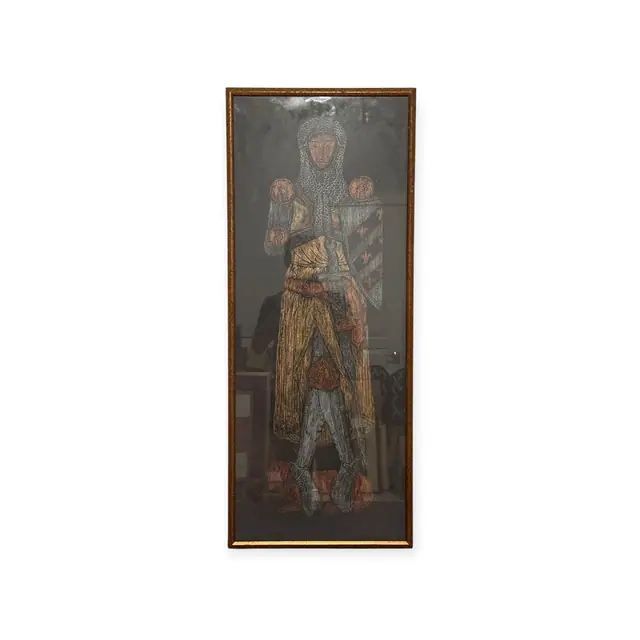
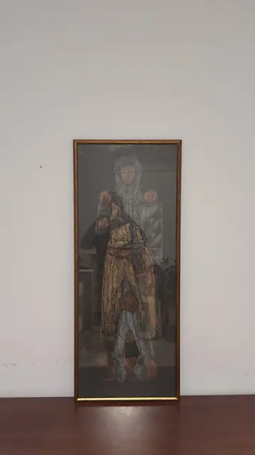
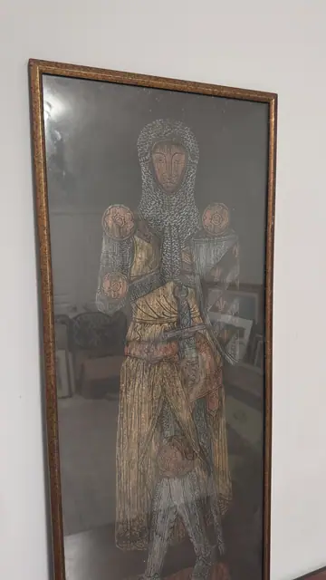
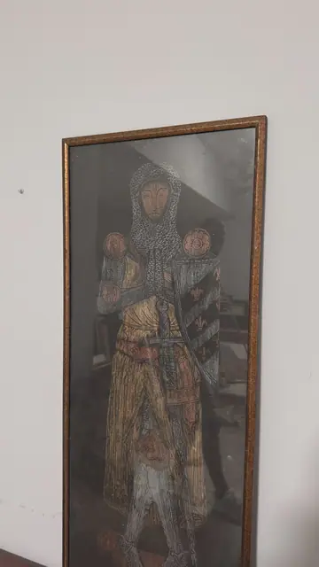

Paintings & Prints
Medieval Knight Brass Rubbing in Gold on Black, Framed
Unknown · 20th century, after a medieval original
Price Upon Request




About the Item
A tall narrow rubbing taken from a medieval monumental brass: a knight stands facing forward in a mail coif and hauberk, the rings rendered as thousands of tiny stippled marks, his surcoat falling in long vertical folds. He holds a heater shield charged with a bend and fleur-de-lys against his left side, a sword hilt at his waist, and a lion or hound crouches beneath his feet, with large heraldic rosettes flanking his shoulders. The whole figure is worked in metallic gold, copper and silver wax over a dense black ground, so it glows against the dark paper. It is glazed and set in a narrow gilt frame that emphasises the tall vertical format. Medium: wax rubbing (brass rubbing) on black paper. Condition: No tears or creases visible; the glass carries heavy reflections and a ceiling light burns out part of the head in one shot. Frame corners look sound.
Details
- Creator:
- Unknown
- Creation Year:
- 20th century, after a medieval original
- Dimensions:
- Height: 38.0 in (96.52 cm)
Width: 15.75 in (40.01 cm)
outside of frame - Medium:
- wax rubbing (brass rubbing) on black paper
- Period:
- 20Th
- Condition:
- Offered in the condition shown in the photographs.
- Reference Number:
- VO-153
- Documentation:
- no certificate photographed